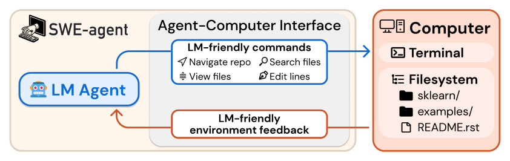
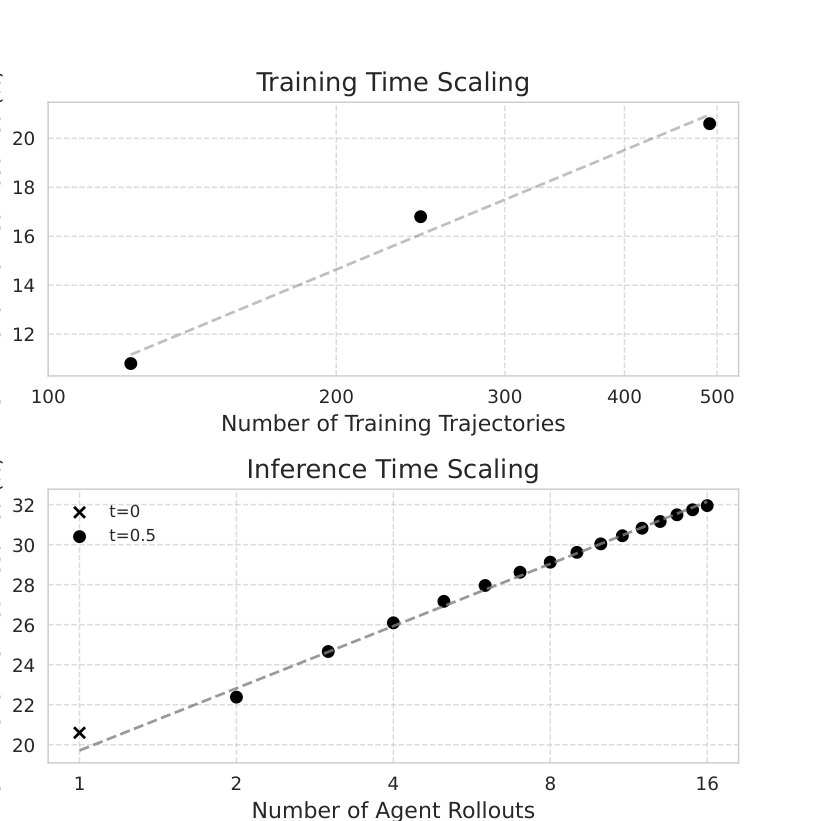

二、国内外研究现状
□ CLI 能力方法：命令行智能体（Bash Agent）与代码智能体（Coding Agent）
CLI
命令行智能体：读日志、改配置、查服务 · 5×

SWE-agent：面向智能体的计算机接口 [Yang+, NeurIPS 24]

SWE-Gym：可执行环境中训练 [Pan+, ICML 25]
CLI 能力无法观测界面：凡依赖渲染结果与视觉反馈的任务，必须引入 GUI 能力
优点：动作精确、执行高效，系统状态可直接读取；单元测试提供可验证奖励，强化学习已实现规模化训练
不足：无法观测渲染结果（SWE-bench Multimodal 最佳仅约 12%）；适用范围受限于具备命令行或 API 的软件